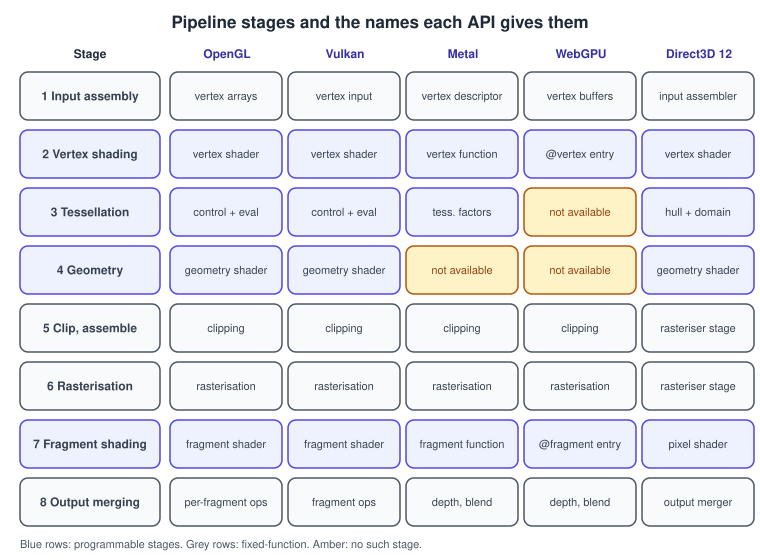
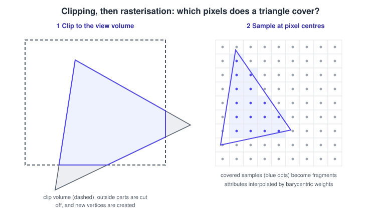
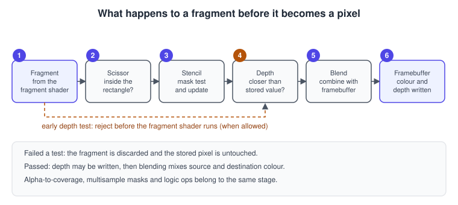
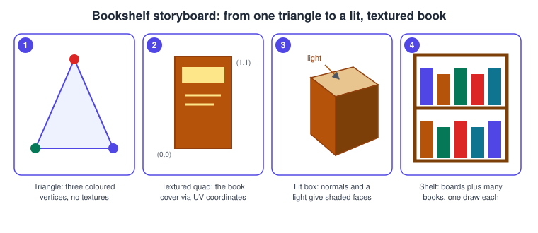

The Rendering Pipeline
|
This content was generated with the assistance of AI and should be verified against the official documentation before being relied on in production. |
The rendering pipeline is the sequence of stages that every triangle passes through between your vertex buffer and the pixels on the screen. Every graphics API, from OpenGL 1.0 to Metal 4, describes the same sequence, with some stages programmable and the others fixed in hardware. Once you can name the stages and say what each one consumes and produces, every API becomes a dialect: the nouns change but the order does not. This page defines the stages, shows the exact names each API gives them, walks through the geometry and arithmetic that happen inside, and gives complete shaders and pipeline state for each API.
The facts were checked in November 2026. The versions documented are OpenGL 4.6 (GLSL 4.60), Vulkan 1.4, Metal 4 (MSL 4.1), WebGPU (W3C Candidate Recommendation Draft, WGSL) and, as context only, Direct3D 12. They run on desktop, mobile and the web; platform requirements are noted where they matter. Examples draw the Bookshelf book: a textured quad at first, then a lit box.
The pipeline at a glance
Stages 2, 3 (tessellation and geometry) and 6 run your programs. The others are configured by state: the buffer layout, the primitive topology, the cull mode, the depth and blend settings. Mesh and task shaders replace stages 1 to 3 with a compute-style front end; they are explained in Advanced Pipeline Stages. Compute shaders are not part of the graphics pipeline at all; they run in their own pass.

The figure lists the stage names per API. WebGPU deliberately has no geometry or tessellation stage, and Metal has no geometry shader (its tessellation is driven from a compute pass). Direct3D 12 folds clipping and rasterisation into one rasteriser stage. The comparison of the way each API sets the pipeline up (a global state machine versus a pipeline object) is the subject of Explicit vs Implicit APIs.
Stage 1: input assembly
Input assembly reads vertex data from buffers and groups it into primitives. You provide:
-
Vertex buffers with the attributes of each vertex (position, normal, texture coordinates, colour) and a layout that says where each attribute sits (the stride between vertices, the offset within one vertex, the data format).
-
An optional index buffer that lists vertices by number so shared vertices are stored once. A cube needs 24 vertices (one per corner per face, because normals differ) but only 36 indices.
-
A primitive topology: point list, line list, line strip, triangle list, triangle strip, triangle fan (not in Metal, WebGPU or Direct3D 12) and patch lists for tessellation. Triangle strips and primitive restart reduce index count.
Meshes, strides and interleaved layouts are covered in Meshes and Vertex Data. A frequent source of silent wrongness is a mismatch between the layout you describe and the data you uploaded; the GPU will happily read garbage.
Stage 2: vertex shading
The vertex shader runs once per vertex (more precisely, once per unique vertex: the GPU caches results by index). Its job is to produce the vertex position in clip space and to pass other data (texture coordinates, normals, colours) on to the rasteriser. In its simplest form it multiplies the position by a model-view-projection matrix:
\[ \mathbf{ p }_{ clip } = P \, V \, M \, \mathbf{ p }_{ object } \]
where \( M \) moves the object into the world, \( V \) into the camera’s frame and \( P \) projects. The meaning of each space is covered in Coordinate Spaces and Transforms. The vertex shader may also animate (skinning, wind), displace and compute lighting terms, but it cannot create or destroy vertices.
Outputs other than the position are called varyings or interpolants; the rasteriser interpolates them across the triangle.
A complete pair of shaders in four languages
The Bookshelf book cover as a textured quad: the vertex shader transforms and forwards the texture coordinate; the fragment shader samples the cover texture.
// GLSL 4.60 core: vertex shader
#version 460 core
layout(location = 0) in vec3 aPosition;
layout(location = 1) in vec2 aUv;
uniform mat4 uMvp;
out vec2 vUv;
void main() {
vUv = aUv;
gl_Position = uMvp * vec4(aPosition, 1.0);
}
// GLSL 4.60 core: fragment shader
#version 460 core
in vec2 vUv;
uniform sampler2D uCover;
out vec4 fragColor;
void main() {
fragColor = texture(uCover, vUv);
}struct Uniforms { mvp : mat4x4<f32> };
@group(0) @binding(0) var<uniform> u : Uniforms;
@group(0) @binding(1) var coverSampler : sampler;
@group(0) @binding(2) var coverTexture : texture_2d<f32>;
struct VsOut {
@builtin(position) position : vec4<f32>,
@location(0) uv : vec2<f32>,
};
@vertex
fn vs_main(@location(0) position : vec3<f32>, @location(1) uv : vec2<f32>) -> VsOut {
var o : VsOut;
o.position = u.mvp * vec4<f32>(position, 1.0);
o.uv = uv;
return o;
}
@fragment
fn fs_main(v : VsOut) -> @location(0) vec4<f32> {
return textureSample(coverTexture, coverSampler, v.uv);
}Source: W3C: WebGPU Shading Language.
#include <metal_stdlib>
using namespace metal;
struct VertexIn {
float3 position [[attribute(0)]];
float2 uv [[attribute(1)]];
};
struct VertexOut {
float4 position [[position]];
float2 uv;
};
vertex VertexOut vertex_main(VertexIn in [[stage_in]],
constant float4x4 &mvp [[buffer(1)]]) {
VertexOut out;
out.position = mvp * float4(in.position, 1.0);
out.uv = in.uv;
return out;
}
fragment float4 fragment_main(VertexOut in [[stage_in]],
texture2d<float> cover [[texture(0)]],
sampler coverSampler [[sampler(0)]]) {
return cover.sample(coverSampler, in.uv);
}Direct3D 12 uses HLSL with the same structure (a float4 SV_Position output and a Texture2D sample); the languages are
compared side by side in Shading Languages Landscape.
Stage 3: tessellation and geometry (optional)
Tessellation splits a coarse patch into many triangles on the GPU so a low-poly mesh can be displaced into detail near the camera. It has three parts: a control stage (hull shader in Direct3D) that sets the subdivision level, a fixed tessellator, and an evaluation stage (domain shader) that positions the new vertices. It exists in OpenGL 4.0 and later and Vulkan, in Direct3D 11 and 12 and, in a different form, in Metal; WebGPU has none.
Geometry shaders take one primitive and may emit zero or more. They were once the answer for point sprites, shadow volumes and layered rendering, but they are slow on most hardware and have been supplanted by instancing, compute and mesh shaders. Avoid them in new code; Metal and WebGPU omit them altogether.
Stage 4: primitive assembly, clipping and the viewport
After the last vertex-processing stage, the GPU builds whole triangles from the vertices, then discards, cuts or adjusts them:

-
Clipping. A vertex position is in homogeneous clip coordinates \( (x_c, y_c, z_c, w_c) \). The point is inside the view volume when \( -w_c \le x_c \le w_c \), \( -w_c \le y_c \le w_c \) and, for the depth range, \( -w_c \le z_c \le w_c \) in OpenGL or \( 0 \le z_c \le w_c \) in Direct3D, Vulkan, Metal and WebGPU. A triangle partly outside is cut against each plane, which can create new vertices and turn one triangle into a polygon that is fanned back into triangles. Triangles fully outside are dropped. Real GPUs add a guard band so that only triangles that cross the near plane or are very large are actually cut.
-
Perspective divide. Dividing by \( w_c \) gives normalised device coordinates: \( (x_n, y_n, z_n) = \left( \frac{ x_c }{ w_c }, \frac{ y_c }{ w_c }, \frac{ z_c }{ w_c } \right) \)
-
Viewport transform. The NDC square is mapped to a rectangle of the target. For a viewport of width \( W \) and height \( H \) with origin \( (x_0, y_0) \): \( x_w = \tfrac{ W }{ 2 }(x_n + 1) + x_0 \) and \( y_w = \tfrac{ H }{ 2 }(y_n + 1) + y_0 \), and depth is mapped to the range of the depth buffer. Whether \( y \) points up or down in window space differs between APIs (see the NDC cubes in Coordinate Spaces and Transforms).
-
Culling. Back-facing triangles can be discarded. The winding order of the projected vertices (counter-clockwise or clockwise) decides which side is the front; the
frontFaceandcullModesettings choose the convention. Most closed meshes cull back faces to halve the rasterisation work.
Stage 5: rasterisation
Rasterisation decides which pixels (more precisely, which sample positions) a triangle covers and produces a fragment for each. The standard test uses edge functions. For an edge from \( a \) to \( b \) and a sample at \( p \):
\[ E(p) = (b_x - a_x)(p_y - a_y) - (b_y - a_y)(p_x - a_x) \]
A sample is inside when the edge functions of all three edges have the same sign. Samples that fall exactly on an edge shared by two triangles follow a top-left rule so that exactly one of the triangles claims them: no cracks, no double blending.
For each covered sample, the rasteriser also computes barycentric coordinates \( (\lambda_0, \lambda_1, \lambda_2) \), the weights of the three vertices. Any varying \( a \) interpolates linearly in screen space only if it is divided by \( w \) first, so the hardware computes the perspective-correct value:
\[ a = \frac{ \sum_i \lambda_i \, a_i / w_i }{ \sum_i \lambda_i / w_i } \]
This is why a texture on a receding floor stays straight and does not swim. You may switch it off per varying with
noperspective (GLSL, MSL) or the equivalent interpolation qualifier, for screen-space effects.
Two details matter in practice:
-
Helper invocations and quads. GPUs shade pixels in 2 by 2 quads so that texture-coordinate derivatives can be computed by differencing neighbours. A triangle that covers one pixel still launches a whole quad, with three helper invocations wasted. Small triangles are therefore expensive.
-
Multisampling (MSAA). With MSAA the rasteriser tests several sample positions per pixel, shades each pixel once and stores per-sample colour and depth, which smooths edges at a memory cost. See Transparency, Blending and Post-Processing for MSAA versus FXAA and TAA.
Stage 6: fragment shading
The fragment shader runs once per covered pixel (or sample, with sample-rate shading). It receives the interpolated varyings, may read textures and uniforms, and returns one or more colours (for multiple render targets) and optionally a depth value. It may also discard the fragment, for example for alpha-tested foliage or a cut-out sticker on a book.
This stage dominates the cost of most scenes, because it runs for every pixel of every triangle that survives culling. The work it does for lighting, shadows and materials is the subject of Lighting and Shading Models, and the sampling it performs is covered in Textures, Sampling and Mipmaps.
Stage 7: per-fragment operations
The fixed hardware that follows the fragment shader decides whether and how each fragment is written.

-
Scissor test. Discards fragments outside an axis-aligned rectangle (separate from the viewport, which maps coordinates).
-
Stencil test. Compares a per-pixel integer (commonly 8 bits) against a reference with a configurable operation, and updates it on pass or fail. Used for masks, portals, outlines and shadow volumes.
-
Depth test. Compares the fragment’s depth to the stored depth with an operation (usually "less") and optionally writes the new depth. This resolves visibility independent of draw order for opaque geometry.
-
Blending. Combines the fragment colour with the stored colour: \( C = C_{ src } \, F_{ src } + C_{ dst } \, F_{ dst } \) with a chosen equation and factors. Alpha blending uses \( F_{ src } = \alpha \) and \( F_{ dst } = 1 - \alpha \). Blending is not programmable on most hardware; it is a configured step (on Apple GPUs a shader can read the on-chip colour directly). Order matters, so transparent surfaces are drawn after opaque ones and sorted back to front.
Early depth testing moves the depth test before the fragment shader when the shader does not write depth, discard or write
to storage resources, so hidden fragments never run the expensive shader. Drawing opaque objects front to back, or running a depth
pre-pass, lets early tests reject more. Features that defeat the shortcut are discard, writing gl_FragDepth or the equivalent,
and alpha-to-coverage in some paths.
The framebuffer, or render target, holds the result: one or more colour images, a depth image, a stencil image, optionally multisampled. It can be the swapchain image shown on screen or a texture used later for shadows, reflections or post-processing.
Setting the pipeline up in each API
The state that configures stages 1, 4, 5 and 7 is spelled differently in each API.
OpenGL: a global state machine
glEnable(GL_DEPTH_TEST);
glDepthFunc(GL_LESS);
glEnable(GL_CULL_FACE);
glCullFace(GL_BACK);
glFrontFace(GL_CCW);
glEnable(GL_BLEND);
glBlendFunc(GL_SRC_ALPHA, GL_ONE_MINUS_SRC_ALPHA);
glViewport(0, 0, width, height);
glClearColor(0.05f, 0.05f, 0.08f, 1.0f);
glClear(GL_COLOR_BUFFER_BIT | GL_DEPTH_BUFFER_BIT);Source: OpenGL 4 reference: glDepthFunc, glCullFace and glBlendFunc.
Each call changes a global setting that stays in effect until changed again. It is easy to leave blending on by accident.
Vulkan: state baked into a pipeline object
VkPipelineInputAssemblyStateCreateInfo inputAssembly = {
.sType = VK_STRUCTURE_TYPE_PIPELINE_INPUT_ASSEMBLY_STATE_CREATE_INFO,
.topology = VK_PRIMITIVE_TOPOLOGY_TRIANGLE_LIST,
.primitiveRestartEnable = VK_FALSE,
};
VkPipelineRasterizationStateCreateInfo raster = {
.sType = VK_STRUCTURE_TYPE_PIPELINE_RASTERIZATION_STATE_CREATE_INFO,
.polygonMode = VK_POLYGON_MODE_FILL,
.cullMode = VK_CULL_MODE_BACK_BIT,
.frontFace = VK_FRONT_FACE_COUNTER_CLOCKWISE,
.lineWidth = 1.0f,
};
VkPipelineDepthStencilStateCreateInfo depth = {
.sType = VK_STRUCTURE_TYPE_PIPELINE_DEPTH_STENCIL_STATE_CREATE_INFO,
.depthTestEnable = VK_TRUE,
.depthWriteEnable = VK_TRUE,
.depthCompareOp = VK_COMPARE_OP_LESS,
};
VkPipelineColorBlendAttachmentState blend = {
.blendEnable = VK_TRUE,
.srcColorBlendFactor = VK_BLEND_FACTOR_SRC_ALPHA,
.dstColorBlendFactor = VK_BLEND_FACTOR_ONE_MINUS_SRC_ALPHA,
.colorBlendOp = VK_BLEND_OP_ADD,
.srcAlphaBlendFactor = VK_BLEND_FACTOR_ONE,
.dstAlphaBlendFactor = VK_BLEND_FACTOR_ZERO,
.alphaBlendOp = VK_BLEND_OP_ADD,
.colorWriteMask = VK_COLOR_COMPONENT_R_BIT | VK_COLOR_COMPONENT_G_BIT |
VK_COLOR_COMPONENT_B_BIT | VK_COLOR_COMPONENT_A_BIT,
};
/* These structures are chained into one VkGraphicsPipelineCreateInfo together with the
shader stages, the vertex input layout, the viewport state and the render target formats. */Source: Vulkan specification: Pipelines.
A Vulkan pipeline is immutable. Switching blend mode means switching to another pipeline object built in advance, although a subset of state (viewport, scissor, cull mode and more) can be declared dynamic and changed at record time.
Metal: a render pipeline state
import Metal
let library = device.makeDefaultLibrary()!
let descriptor = MTLRenderPipelineDescriptor()
descriptor.vertexFunction = library.makeFunction(name: "vertex_main")
descriptor.fragmentFunction = library.makeFunction(name: "fragment_main")
descriptor.colorAttachments[0].pixelFormat = .bgra8Unorm
descriptor.depthAttachmentPixelFormat = .depth32Float
let pipeline = try device.makeRenderPipelineState(descriptor: descriptor)
// Cull mode, winding and depth test live on the encoder and a depth-stencil state object.
let depthDescriptor = MTLDepthStencilDescriptor()
depthDescriptor.depthCompareFunction = .less
depthDescriptor.isDepthWriteEnabled = true
let depthState = device.makeDepthStencilState(descriptor: depthDescriptor)!
encoder.setRenderPipelineState(pipeline)
encoder.setDepthStencilState(depthState)
encoder.setCullMode(.back)
encoder.setFrontFacing(.counterClockwise)Source: Apple: MTLRenderPipelineDescriptor.
WebGPU: a render pipeline
const pipeline = device.createRenderPipeline({
layout: 'auto',
vertex: {
module: shaderModule,
entryPoint: 'vs_main',
buffers: [{
arrayStride: 20, // 3 floats position + 2 floats uv
attributes: [
{ shaderLocation: 0, offset: 0, format: 'float32x3' },
{ shaderLocation: 1, offset: 12, format: 'float32x2' },
],
}],
},
fragment: {
module: shaderModule,
entryPoint: 'fs_main',
targets: [{ format: navigator.gpu.getPreferredCanvasFormat() }],
},
primitive: { topology: 'triangle-list', cullMode: 'back', frontFace: 'ccw' },
depthStencil: { format: 'depth24plus', depthWriteEnabled: true, depthCompare: 'less' },
});The four listings configure the same seven stages. Reading them side by side is the fastest way to move between APIs.
Bookshelf storyboard: the first four draws
The Bookshelf scene is built in steps. Each step adds one idea from this page.

-
Draw three coloured vertices with the vertex and fragment shaders only. This proves buffers, shaders and the swapchain work.
-
Draw four vertices as a triangle strip with texture coordinates, and sample the cover texture in the fragment shader.
-
Draw a box with normals, enable the depth test and culling, and compute a diffuse term from the light direction in the fragment shader.
-
Draw the boards and many books from one vertex buffer by changing the model matrix per draw (or by instancing).
Common mistakes
-
Wrong face culling. A mirrored model matrix or a different handedness flips the winding and makes the book vanish. Check the
frontFacesetting before suspecting the mesh. -
No depth buffer or no depth write. Opaque geometry then appears in draw order, not depth order.
-
Mixing up the depth range. An OpenGL projection matrix applied to a Vulkan, Metal or WebGPU target clips half the scene because the clip volumes differ in depth; Vulkan also has a flipped \( y \) axis relative to OpenGL.
-
Layout mismatch. A stride that does not match the data produces stretched or exploded geometry, with no error from the API.
-
Alpha blending without sorting. Transparent surfaces drawn in arbitrary order blend wrongly.
-
Leaving state on. In OpenGL, a blend or depth setting left from a previous draw breaks the next one; in explicit APIs this becomes the wrong pipeline object.
-
Using
discardeverywhere. It turns off early depth testing and hidden-surface removal on many GPUs.
Performance notes
-
Vertex work scales with vertices, fragment work with pixels covered including overdraw. Reduce overdraw by drawing opaque geometry front to back and by culling hidden objects before submission.
-
Triangles smaller than a few pixels waste quad work. Use level of detail so distant objects use fewer, larger triangles.
-
The post-transform vertex cache works best when indices reference nearby vertices in a good order; optimise index order with a tool such as meshoptimizer.
-
Keep state changes few and batched; in OpenGL group draws by shader, texture and blend state, in explicit APIs by pipeline.
-
MSAA multiplies memory and bandwidth; on tile-based GPUs it can be resolved on chip at little cost.
-
Move work from the fragment shader to the vertex shader only when the result varies slowly across the triangle.
What the books cover and where they are outdated
The OpenGL SuperBible (4th edition, chapters 4 and 15), the OpenGL ES 3.0 Programming Guide (chapters 1 and 7) and Selman’s Java 3D Programming (chapters 2 and 18) each describe this pipeline. The ordering is the same one documented above. The surrounding mechanisms are older.
| Statement in the books | Situation in 2026 |
|---|---|
Vertex transformation and lighting use the fixed-function matrix stack ( |
Core OpenGL, OpenGL ES 2.0 and later, WebGL and all modern APIs pass matrices as uniforms and compute lighting in shaders. |
The pipeline has vertex, rasterisation and per-fragment stages (OpenGL 2.x) |
Tessellation, geometry, compute, mesh, task and ray-tracing stages have been added; geometry shaders are discouraged. |
OpenGL ES 2.0 has a vertex shader and a fragment shader and nothing else |
OpenGL ES 3.2 adds tessellation and geometry shaders; Metal and WebGPU expose different subsets. |
Java 3D renders through a fixed render loop in the Java 3D runtime |
Java 3D 1.7.2 (JogAmp) still runs on JOGL and OpenGL, but new projects use engines, WebGL or WebGPU. |
The framebuffer is a fixed set of buffers owned by the window system |
Render targets are explicit objects that can be rendered to and sampled later (framebuffer objects, render passes, attachments). |
Recent changes
-
Vulkan 1.3 (2022) made dynamic rendering part of the core (render passes without render-pass objects), and extensions such as
VK_EXT_shader_objectallow applications to bind shaders without building monolithic pipelines. -
Mesh and task shaders became a standard Vulkan extension (
VK_EXT_mesh_shader, 2022), arrived in Metal 3 (2022) and in OpenGL asGL_EXT_mesh_shader(2025). -
WebGPU reached the W3C Candidate Recommendation Draft stage (September 2026 revision) and ships in Chrome and Edge 113 and later, Firefox 141 and later on Windows, and Safari 26.
-
Metal 4 (2025) restructures command encoding and adds tensor and machine-learning operations that can run inside shaders; it requires an A14 or M1 GPU or later.
See it in
OpenGL: The OpenGL Rendering Pipeline; WebGL: The WebGL Rendering Pipeline; Metal: The Metal Render Pipeline; Vulkan: The Vulkan Graphics Pipeline; Unity: Render Pipelines Overview; Unreal Engine: Rendering Overview.
References
-
OpenGL Wiki: Rendering Pipeline Overview and OpenGL 4.6 core specification
-
Apple: Render passes and Metal Shading Language Specification
-
Microsoft: Direct3D 12 pipelines and shaders (context only)
-
Wright, Lipchak and Haemel, OpenGL SuperBible, 4th edition (Addison-Wesley, 2007); Ginsburg, Purnomo et al., OpenGL ES 3.0 Programming Guide (Addison-Wesley, 2014): the publisher pages are listed in the section bibliography
-
Daniel Selman, Java 3D Programming (Manning, 2002): publisher page